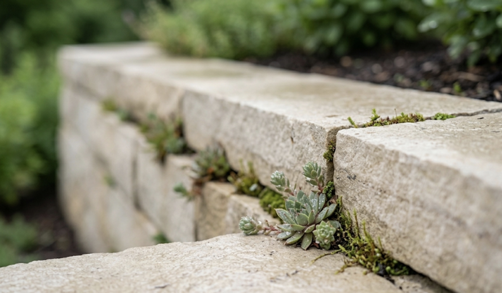
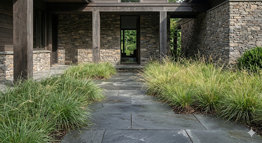
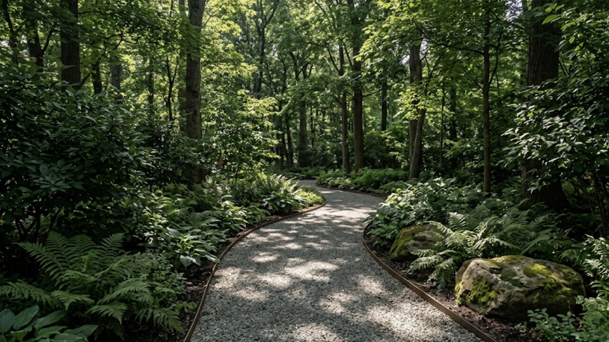

Landscape Care
Clean, consistent maintenance that keeps properties sharp and presentable.
Shaping the character of Winston-Salem properties since 1968.

From regular landscape care to stonework, paths, and custom outdoor projects, Klean Image helps Winston-Salem properties look finished, cared for, and built to last.

Clean, consistent maintenance that keeps properties sharp and presentable.

Defined edges, walls, and features that bring structure to outdoor spaces.

Functional outdoor routes with a polished, intentional finish.

Site-specific work for properties that need more than a standard service list.
Klean Image is a local, family-owned landscaping business serving Winston-Salem homes and commercial properties.
The work ranges from ongoing care to outdoor improvements that change how a property looks, functions, and feels.
The standard is simple: do the work well, keep the property looking cared for, and build lasting relationships with the people who trust us with their space.
Tell us what you’re working on, what needs to change, or what needs to be maintained.
Request a Quote